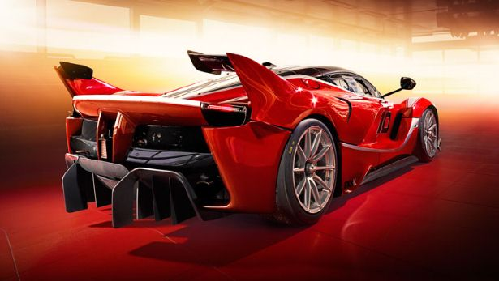

.jpeg)
Ferrari FXX-K là một chiếc xe đua hiệu suất cao (40 chiếc) do nhà sản xuất ô tô Ferrari ở Maranello , Ý thiết kế và do Marco Fainello thiết kế và kiến trúc sư Flavio Manzoni , giám đốc của Centro Stile Ferrari. FXX-K dựa trên đường phố LaFerrari hợp pháp . Đây là một kế thừa cho FXX và 599XX.
FXX K có công suất 1.050 PS (772 kW, 1,036 mã lực) và 900 Nm (trong đó 860 PS (633 kW, 848 mã lực) được cung cấp bởi V12 ICE và 190 PS (140 mã lực, 187 mã lực) bằng động cơ điện . Động cơ V12 đã được điều chỉnh để sử dụng theo dõi cũng như hệ thống HY- KERS . FXX-K có hiệu suất cực kỳ hiệu quả và kết quả là giảm 540 kg (1,190 lb) ở 200 km / h (124 dặm / giờ).
Nó bao gồm bốn chế độ lái xe: Đủ điều kiện (hiệu suất tối đa ở khoảng cách ngắn), Long Run (cho lái xe đường dài), Fast Charge (để sạc pin nhanh hơn) và Manual Boost, sử dụng hết sức mạnh của động cơ và pin cho tối đa mô-men xoắn, góc và tốc độ. Nó có công nghệ dựa trên F1, bao gồm sự khác biệt điện tử E-Diff, điều khiển lực kéo F1-Trac và hệ thống phanh ABS, tất cả đều được điều khiển từ bảng điều khiển trung tâm (Manettino). Cũng giống như FXX và 599XX trước, FXX K là một phần của chương trình Client Test Driver của Ferrari, cho phép chủ sở hữu của XX xe lái theo dõi đặc biệt, thu thập dữ liệu để sử dụng trong tương lai Ferrari đường và đua xe. Mặt trước của chiếc xe có một bộ phận chia tách lớn và đôi cánh phản lực, đèn pha rất nhỏ để cải thiện tính khí động học. Ở phía sau, đuôi cao hơn và bao gồm một phần lướt gió di động có đuôi và một cánh nhỏ ở cuối mỗi vây để tối đa hóa lực lưỡng.
Chiều dài: 192.8inch Chiều rộng: 80.7 inch Chiều cao: 43.9 inch
Chân đế: 104 inch Trọng lượng: 1495kg